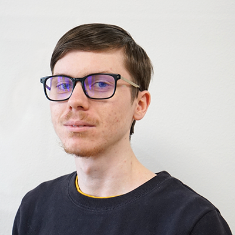

Presentation
Theo Dumont
My name is Théo Dumont, I am 19 years old and I am currently in the second year of BTS SIO
at Dijon. My goal is to have enough knowledge to work and invest myself as a software
developer. Since I was 12, IT has played an important role in my life. But what
interested me most at the time was being a video game developer. But as my knowledge
grew in the field of development computer science thanks to python, I have strayed
further and further from my initial objective. I decided to do this BTS to have
more practical exercises than theoretical and to discover new languages that
allow me to further open my horizons.